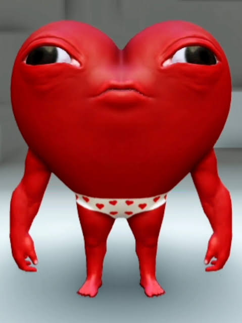
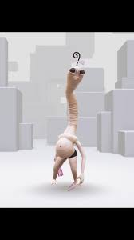

top 1. "skin baby aurax master" atualmente uma das skins mais famosas e cobiçadas

A "Skin Baby Aurax Master" é uma das skins mais conhecidas e comentadas entre os jogadores
de
Roblox.
Seu visual exagerado e diferente chama muita atenção, tornando-a popular em vídeos, memes e
partidas
online. Por ser marcante e divertida, ela é considerada uma das skins mais famosas da
comunidade.
top 2. "skin L bombado" atualmente uma das skins mais famosas e
cobiçadas

A "Skin L bombado" é uma skin que se tornou popular devido à sua
aparência
engraçada e ao seu nome peculiar. Ela é frequentemente usada em vídeos de humor e memes
dentro
da
comunidade Roblox, tornando-se uma escolha divertida para jogadores que gostam de se
destacar
com
skins únicas.
top 3. "skin minhocao"

A "Skin Minhocão" é um avatar com um visual diferente e divertido, inspirado em uma criatura
alongada e curiosa. Seu formato incomum chama bastante atenção no Roblox, sendo uma ótima
escolha para jogadores que gostam de skins engraçadas, criativas e que fogem do estilo
tradicional.